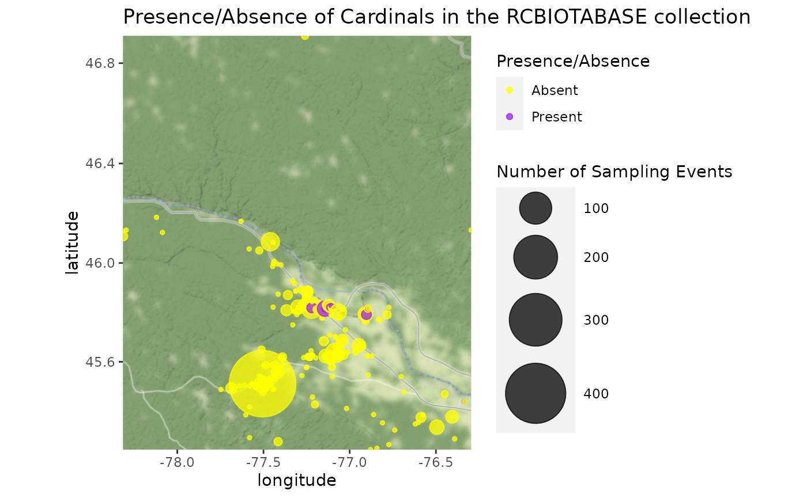

Mapping Observations
2021-03-02
Source:vignettes/articles/mapping-observations.Rmd
mapping-observations.RmdIn this article we’ll walk through how to create various types of maps of the observations downloaded with naturecounts to get a sense of the spatial distribution.
The following examples use the “testuser” user which is not available to you. You can quickly sign up for a free account of your own to access and play around with these examples.
Setup
To do so we’re going to use the following packages:
library(naturecounts)
library(sf)
library(rnaturalearth)
library(ggmap)
library(dplyr)
library(mapview)First we’ll use download some data:
barred_owls <- nc_data_dl(species = 7590, region = list(statprov = "AB"),
username = "testuser", info = "nc_tutorial")## Using filters: species (7590); fields_set (BMDE2.00-min); statprov (AB)## Collecting available records...## collection nrecords
## 1 ABATLAS1 70
## 2 ABATLAS2 103
## 3 ABBIRDRECS 202
## 4 BBS 8
## 5 BBS50-CAN 8
## 6 PFW 5
## Total records: 396##
## Downloading records for each collection:## ABATLAS1## Records 1 to 70 / 70## ABATLAS2## Records 1 to 103 / 103## ABBIRDRECS## Records 1 to 202 / 202## BBS## Records 1 to 8 / 8## BBS50-CAN## Records 1 to 8 / 8## PFW## Records 1 to 5 / 5
head(barred_owls)## record_id collection project_id protocol_id protocol_type species_id
## 1 225604466 ABATLAS1 1048 NA NA 7590
## 2 225604642 ABATLAS1 1048 NA NA 7590
## 3 225610784 ABATLAS1 1048 NA NA 7590
## 4 225611808 ABATLAS1 1048 NA NA 7590
## 5 225616490 ABATLAS1 1048 NA NA 7590
## 6 225617764 ABATLAS1 1048 NA NA 7590
## statprov_code country_code SiteCode latitude longitude bcr subnational2_code
## 1 AB CA 2681 58.32639 -116.4019 6 CA.AB.17
## 2 AB CA 6270 58.23722 -111.4258 6 CA.AB.16
## 3 AB CA 3367 54.53889 -115.0678 6 CA.AB.17
## 4 AB CA 1251 53.83417 -117.5319 6 CA.AB.14
## 5 AB CA 2988 51.03000 -114.9319 10 CA.AB.15
## 6 AB CA 1251 53.83417 -117.5319 6 CA.AB.14
## iba_site utm_square survey_year survey_month survey_week survey_day
## 1 N/A 11VNE36 1990 6 2 9
## 2 N/A 12VVK75 1991 6 3 17
## 3 N/A 11UPA24 1991 NA NA NA
## 4 N/A 11UMV66 1990 5 1 7
## 5 N/A 11UPS45 1991 NA NA NA
## 6 N/A 11UMV66 1990 5 2 9
## breeding_rank GlobalUniqueIdentifier CatalogNumber Locality
## 1 10 URN:NatureAlberta:ABATLAS1:I4017-BAOW I4017-BAOW 11UNQ36
## 2 10 URN:NatureAlberta:ABATLAS1:J5005-BAOW J5005-BAOW 12UVV75
## 3 0 URN:NatureAlberta:ABATLAS1:G5031-BAOW G5031-BAOW 11UPL24
## 4 60 URN:NatureAlberta:ABATLAS1:F4057-BAOW F4057-BAOW 11UMK66
## 5 0 URN:NatureAlberta:ABATLAS1:C5136-BAOW C5136-BAOW 11UPG45
## 6 10 URN:NatureAlberta:ABATLAS1:F4033-BAOW F4033-BAOW 11UMK66
## TimeCollected CollectorNumber FieldNumber Remarks ProjectCode
## 1 <NA> 1728 NA <NA> ABATLAS1
## 2 <NA> 1718 NA <NA> ABATLAS1
## 3 <NA> 1760 NA <NA> ABATLAS1
## 4 <NA> 1710 NA <NA> ABATLAS1
## 5 <NA> 1375 NA <NA> ABATLAS1
## 6 <NA> 1248 NA <NA> ABATLAS1
## ProtocolType ProtocolCode ProtocolURL SurveyAreaIdentifier
## 1 Breeding Bird Atlas <NA> <NA> 2681
## 2 Breeding Bird Atlas <NA> <NA> 6270
## 3 Breeding Bird Atlas <NA> <NA> 3367
## 4 Breeding Bird Atlas <NA> <NA> 1251
## 5 Breeding Bird Atlas <NA> <NA> 2988
## 6 Breeding Bird Atlas <NA> <NA> 1251
## SamplingEventIdentifier SamplingEventStructure RouteIdentifier
## 1 I4017 NA <NA>
## 2 J5005 NA <NA>
## 3 G5031 NA <NA>
## 4 F4057 NA <NA>
## 5 C5136 NA <NA>
## 6 F4033 NA <NA>
## TimeObservationsStarted TimeObservationsEnded DurationInHours
## 1 <NA> <NA> <NA>
## 2 <NA> <NA> <NA>
## 3 <NA> <NA> <NA>
## 4 <NA> <NA> <NA>
## 5 <NA> <NA> <NA>
## 6 <NA> <NA> <NA>
## TimeIntervalStarted TimeIntervalEnded TimeIntervalsAdditive NumberOfObservers
## 1 NA NA NA 1
## 2 NA NA NA 3
## 3 NA NA NA 0
## 4 NA NA NA 0
## 5 NA NA NA 0
## 6 NA NA NA 2
## NoObservations ObservationCount ObservationDescriptor ObservationCount2
## 1 NA <NA> <NA> <NA>
## 2 NA <NA> <NA> <NA>
## 3 NA <NA> <NA> <NA>
## 4 NA <NA> <NA> <NA>
## 5 NA <NA> <NA> <NA>
## 6 NA <NA> <NA> <NA>
## ObservationDescriptor2 ObservationCount3 ObservationDescriptor3
## 1 <NA> <NA> <NA>
## 2 <NA> <NA> <NA>
## 3 <NA> <NA> <NA>
## 4 <NA> <NA> <NA>
## 5 <NA> <NA> <NA>
## 6 <NA> <NA> <NA>
## ObservationCount4 ObservationDescriptor4 ObservationCount5
## 1 <NA> <NA> <NA>
## 2 <NA> <NA> <NA>
## 3 <NA> <NA> <NA>
## 4 <NA> <NA> <NA>
## 5 <NA> <NA> <NA>
## 6 <NA> <NA> <NA>
## ObservationDescriptor5 ObservationCount6 ObservationDescriptor6
## 1 <NA> <NA> <NA>
## 2 <NA> <NA> <NA>
## 3 <NA> <NA> <NA>
## 4 <NA> <NA> <NA>
## 5 <NA> <NA> <NA>
## 6 <NA> <NA> <NA>
## AllIndividualsReported AllSpeciesReported
## 1 <NA> Unknown
## 2 <NA> Unknown
## 3 <NA> Unknown
## 4 <NA> Unknown
## 5 <NA> Unknown
## 6 <NA> UnknownSimple Maps
The quickest way to look at the spatial distribution is probably to use Stamen maps through the ggmap package.
First let’s get an idea of how many distinct points there are (often multiple observations are recorded for the same location).
nrow(barred_owls)## [1] 396## [1] 259So we have 259 sites for 396 observations.
Next let’s convert our data to spatial data so we can extract the spatial extent. Note that we’re using CRS EPSG code of 4326 because that’s reflects unprojected, GPS data in lat/lon.
We can extract the spatial extent (bounding box) with the st_bbox() function.
st_bbox(barred_owls_sf)## xmin ymin xmax ymax
## -119.50848 50.65669 -110.01704 58.32639Now we’re ready to make a map of the distribution of observations. First we get the baselayer map.
map <- get_stamenmap(bbox = as.numeric(st_bbox(barred_owls_sf)), zoom = 5)## Source : http://tile.stamen.com/terrain/5/5/9.png## Source : http://tile.stamen.com/terrain/5/6/9.png## Source : http://tile.stamen.com/terrain/5/5/10.png## Source : http://tile.stamen.com/terrain/5/6/10.pngNow we can add our observations. Note that for ggmap, we’ll use non-sf data frame.
ggmap(map) +
geom_point(data = barred_owls, aes(x = longitude, y = latitude))
Let’s count our observations for each site.
ggmap(map) +
geom_count(data = barred_owls, aes(x = longitude, y = latitude))
Interactive Maps
If we want to get fancy we can also create interactive maps using the mapview packages (see also the leaflet for R package).
More Complex Maps
For more complex, or detailed maps, we can use a variety of spatial data files to layer our data over maps of the area.
For this we’ll get some outlines of Canada and it’s Provinces and Territories from rnaturalearth.
canada <- ne_states(country = "canada", returnclass = "sf") %>%
st_transform(3347)
ggplot() +
theme_bw() +
geom_sf(data = canada)
Let’s add our observations (note that the data are transformed to match the projection of the first layer, here the canada data).
ggplot() +
theme_bw() +
geom_sf(data = canada) +
geom_sf(data = barred_owls_sf, size = 0.5)
We can also focus on Alberta
ab <- filter(canada, name == "Alberta")
ggplot() +
theme_bw() +
geom_sf(data = ab) +
geom_sf(data = barred_owls_sf, size = 0.5)
Perhaps we should see how many of these observations were made in parks.
First we’ll download and extract the Park shapefiles available from the Alberta Parks website.
url <- "https://www.albertaparks.ca/media/2941843/parks_and_protected_areas_alberta.zip"
download.file(url = url)
unzip("parks_and_protected_areas_alberta.zip")
parks <- st_read("Parks_Protected_Areas_Alberta.shp")## Reading layer `Parks_Protected_Areas_Alberta' from data source `/home/steffi/Projects/Business/BSC/NatureCounts/naturecounts/vignettes/articles/article_files/Parks_Protected_Areas_Alberta.shp' using driver `ESRI Shapefile'
## Simple feature collection with 477 features and 17 fields
## geometry type: MULTIPOLYGON
## dimension: XY
## bbox: xmin: 170844.3 ymin: 5425575 xmax: 860845.9 ymax: 6659216
## projected CRS: NAD83 / Alberta 10-TM (Forest)Add this layer to our plot.
ggplot() +
theme_bw() +
geom_sf(data = ab) +
geom_sf(data = parks, colour = "darkgreen", fill = "forestgreen") +
geom_sf(data = barred_owls_sf, size = 0.5)
Well it’s actually a bit difficult to tell, there are lots of small parks!
To solve this problem, we can merge our observations with the parks and plot those inside parks separately from those outside parks.
First we’ll transform our observation data to match the CRS of parks, then we’ll join the park information to our observations, based on whether the observations overlap a park polygon (by default this is a left join), and finally we’ll create a new column outside_park that is a category for out or in the park, based on whether the observation was joined to a park name (OC_NAME).
barred_owls_sf <- barred_owls_sf %>%
st_transform(st_crs(parks)) %>%
st_join(parks) %>%
mutate(outside_park = if_else(is.na(OC_NAME), "Outside Park", "Inside Park"))And now we can see that there are quite a few, if not more, observations outside of parks than in.
ggplot() +
theme_bw() +
geom_sf(data = ab) +
geom_sf(data = parks, colour = "darkgreen", fill = "forestgreen") +
geom_sf(data = barred_owls_sf, size = 1) +
facet_wrap(~outside_park)
We might also be interested in observations over time.
First we’ll bin our yearly observations
barred_owls_sf <- mutate(barred_owls_sf,
years = cut(survey_year,
breaks = seq(1960, 2010, 10),
labels = seq(1960, 2000, 10), right = FALSE))We’ll also want to see how many sample years there are per decade.
years <- barred_owls_sf %>%
group_by(years) %>%
summarize(n = length(unique(survey_year)), .groups = "drop")Now we can see how Barred Owl observations change over the years
ggplot() +
theme_bw() +
geom_sf(data = ab) +
geom_sf(data = parks, colour = "darkgreen", fill = "forestgreen") +
geom_sf(data = barred_owls_sf, size = 1.5) +
geom_sf_text(data = years, x = 4427134, y = 2965275, hjust = 0, vjust = 1,
aes(label = paste0("n = ", n))) +
facet_wrap(~years)
Presence/Absence
We can also use some of the naturecounts helper functions to create presence/absence maps.
Here we download data from the RCBIOTABASE collection, make sure to keep only observations where all species and the location were reported, create a new presence column which is either TRUE, FALSE, or NA for each sampling event. Finally we use the format_zero_fill() function to fill in sampling events where cardinals (species_id 19360) were not detected (presence would then be 0).
cardinals <- nc_data_dl(collection = "RCBIOTABASE", username = "testuser",
info = "nc_tutorial")## Using filters: collections (RCBIOTABASE); fields_set (BMDE2.00-min)## Collecting available records...## collection nrecords
## 1 RCBIOTABASE 12614
## Total records: 12,614##
## Downloading records for each collection:## RCBIOTABASE## Records 1 to 5000 / 12614## Records 5001 to 10000 / 12614## Records 10001 to 12614 / 12614
cardinals_zf <- cardinals %>%
filter(AllSpeciesReported == "Yes", !is.na(latitude), !is.na(longitude)) %>%
group_by(species_id, AllSpeciesReported, SamplingEventIdentifier, latitude, longitude) %>%
summarize(presence = sum(as.numeric(ObservationCount)) > 0, .groups = "drop") %>%
format_zero_fill(species = 19360,
by = "SamplingEventIdentifier",
extra_event = c("latitude", "longitude"),
fill = "presence")## - Converted 'fill' column (presence) from logical to numeric
head(cardinals_zf)## SamplingEventIdentifier species_id presence latitude longitude
## 1 RCBIOTABASE-10000-1 19360 0 45.58604 -77.48721
## 2 RCBIOTABASE-10001-1 19360 0 45.51110 -77.50533
## 3 RCBIOTABASE-10002-1 19360 0 45.50803 -77.50786
## 4 RCBIOTABASE-10003-1 19360 0 45.51110 -77.50533
## 5 RCBIOTABASE-10004-1 19360 0 45.51110 -77.50533
## 6 RCBIOTABASE-10005-1 19360 0 45.51110 -77.50533Now that we have our presence/absence data for cardinals, we can create a map.
map <- st_as_sf(cardinals_zf, coords = c("longitude", "latitude")) %>%
st_bbox() %>%
as.numeric() %>%
get_stamenmap(bbox = ., zoom = 8)## Source : http://tile.stamen.com/terrain/8/72/90.png## Source : http://tile.stamen.com/terrain/8/73/90.png## Source : http://tile.stamen.com/terrain/8/72/91.png## Source : http://tile.stamen.com/terrain/8/73/91.png
ggmap(map, base_layer = ggplot(data = cardinals_zf)) +
geom_count(alpha = 0.75,
aes(x = longitude, y = latitude, colour = factor(presence))) +
scale_colour_manual(name = "Presence/Absence", values = c("yellow", "purple"),
labels = c("1" = "Present", "0" = "Absent")) +
scale_size_continuous(name = "Number of Sampling Events", range = c(1, 20)) +
labs(title = paste0("Presence/Absence of Cardinals in the RCBIOTABASE collection"))